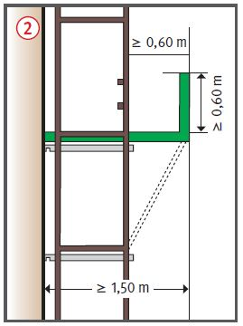
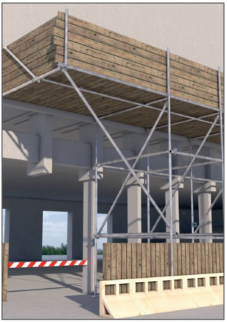

Durch fehlende Sicherungsmaßnahmen
beim Auf-, Um- bzw. Abbau kann es zu Absturzunfällen kommen.
Durch fehlende oder mangelhafte
Schutzdächer können z. B.
Beschäftigte, Maschinen oder
Geräte durch herabfallende
Gegenstände getroffen werden.
Allgemeines
Gerüstbauarbeiten nur unter Aufsicht einer fachkundigen Person und von fachlich geeigneten Beschäftigten ausführen lassen.
Es sind die Angaben des Herstellers in der Aufbau- und Verwendungsanleitung zu beachten. Möglicherweise muss eine Montageanweisung erstellt werden, in diese die Mitarbeiter unterwiesen werden müssen.
Persönliche Schutzausrüstungen gegen Absturz (PSAgA) nur dann benutzen, wenn aus arbeitstechnischen Gründen Absturzsicherungen (z. B. Seitenschutz) und Auffangeinrichtungen (z. B. Schutznetze) nicht angewendet werden können.
Richtige und sichere Benutzung der PSA in regelmäßigen Abständen unterweisen und praktisch üben. In Verbindung mit dem Einsatz der PSAgA muss ein Rettungskonzept erstellt und die Beschäftigten darin unterwiesen werden. Die sich hieraus ergebende PSAgA und die Rettungsausrüstung mit praktischen Übungen anhand des jeweils eingesetzten Systems und den jeweiligen Umgebungs- und Arbeitsbedingungen durchführen.
Schutzmaßnahmen
Kann in Bereichen, über denen die Gefahr des Herabfallens von Gegenständen besteht, z. B. Zugänge in Gebäude, Gerüsttreppen, Bedienungsständen von Maschinen, Aufzügen, übereinander gelegenen Arbeitsplätzen, nicht abgesperrt werden, sind z. B. Schutzdächer oder Schutznetze vorzusehen. Dies gilt auch für Arbeiten an übereinanderliegenden Arbeitsplätzen, welche gleichzeitig ausgeführt werden oder sich der Gefahrenbereich nicht abgrenzen lässt (z. B. zum Schutz des öffentlichen Verkehrs, von Passanten) .
Schutzdach mit Bordwand


Zusätzliche Hinweise für Schutzdächer
Schutzdächer an Gerüsten
müssen mindestens 1,50 m breit
sein und die Außenseite des
Gerüstes um mindestens 0,60 m
überragen .
Bordwände von Schutzdächern müssen mindestens
0,60 m hoch sein .
Beim Schutzdach ist der Belag bis zum Bauwerk hin auszulegen, dabei dürfen die Abstände zwischen den Belagteilen nicht mehr als 25 mm betragen.
Wird ein Schutzdach um eine Bauwerksecke geführt, ist die Abdeckung in voller Breite beizubehalten.
Schutzdächer bei turmartigen Bauwerken müssen aus kreuzweise verlegten Bohlen 24 x 4 cm mit dazwischen liegender 10 cm dicker Dämmschicht bestehen.
Zusätzliche Hinweise für Schutznetze
Schutznetze unmittelbar unter dem Arbeitsplatz anordnen.
Maschenweite der Schutznetze höchstens 2,0 cm.
Prüfungen
Gerüstersteller: Prüfung durch eine "zur Prüfung befähigte Person" nach Fertigstellung und vor Übergabe an den Nutzer, um den ordnungsgemäßen Zustand festzustellen (Nachweis-Prüfprotokoll).
Gerüstnutzer: Inaugenscheinnahme durch eine "qualifizierte Person" des jeweiligen Nutzers vor der Verwendung, um die sichere Funktion und die Mängelfreiheit festzustellen (Nachweis-Checkliste).